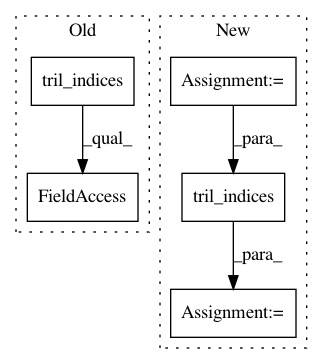

8a801031c5a5f34f5d83319aa99a9e0889bb56a1,gpflow/transforms.py,LowerTriangular,backward_tensor,#LowerTriangular#Any#,392
Before Change
N = tf.cast(tf.sqrt(tf.size(y) / self.num_matrices), tf.int32)
reshaped = tf.reshape(y, (N, N, self.num_matrices))
size = len(reshaped)
triangular = reshaped[np.tril_indices(size, 0)].T
return triangular
def log_jacobian_tensor(self, x):
return tf.zeros((1,), settings.float_type)
After Change
reshaped = tf.reshape(y, shape=(N, N, self.num_matrices))
print(reshaped, reshaped.shape.as_list())
N_not_tensor = reshaped.shape.as_list[0]
indices = np.dstack(np.tril_indices(N_not_tensor))[0]
triangular = tf.reshape(tf.gather_nd(reshaped, indices), shape=[-1])
return triangular
def log_jacobian_tensor(self, x):
In pattern: SUPERPATTERN
Frequency: 3
Non-data size: 5
Instances
Project Name: GPflow/GPflow
Commit Name: 8a801031c5a5f34f5d83319aa99a9e0889bb56a1
Time: 2018-01-02
Author: art.art.v@gmail.com
File Name: gpflow/transforms.py
Class Name: LowerTriangular
Method Name: backward_tensor
Project Name: GPflow/GPflow
Commit Name: 314c5bd86e593b5e9720bc7fd943a86866358c2a
Time: 2017-10-03
Author: art.art.v@gmail.com
File Name: gpflow/transforms.py
Class Name: LowerTriangular
Method Name: backward
Project Name: GPflow/GPflow
Commit Name: 5809cb0b339612434f4f332a91a2cd3e4570c34d
Time: 2018-02-26
Author: james@prowler.io
File Name: gpflow/transforms.py
Class Name: LowerTriangular
Method Name: backward_tensor